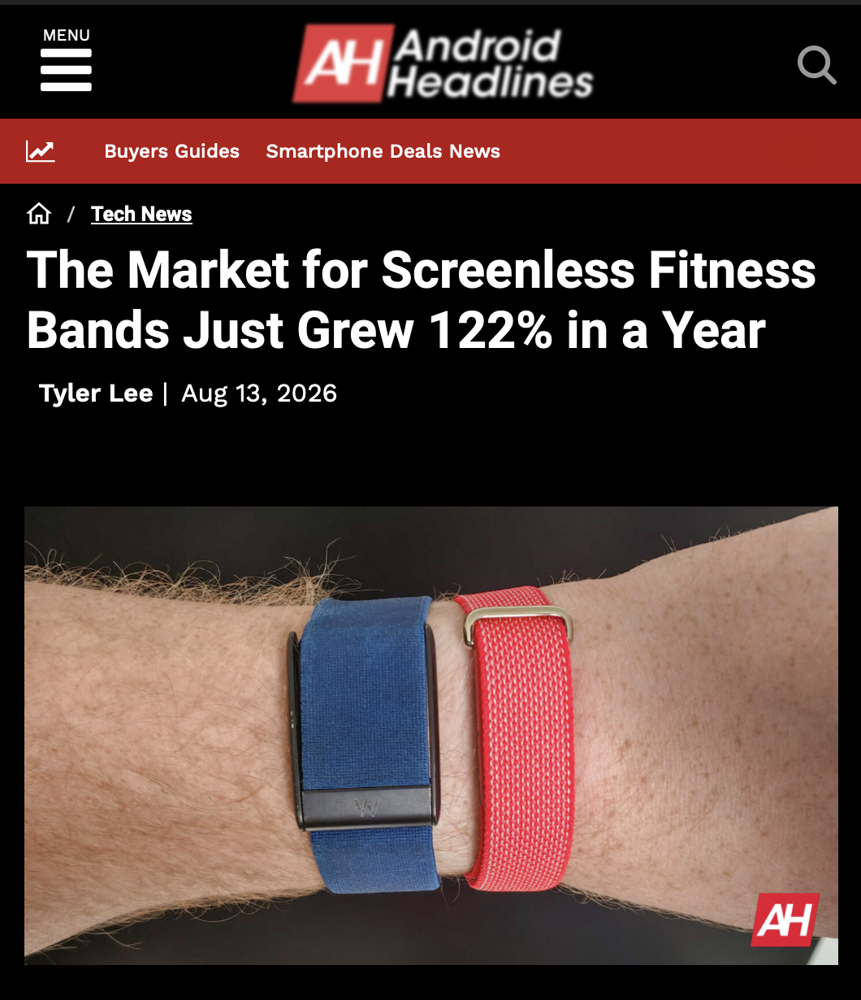
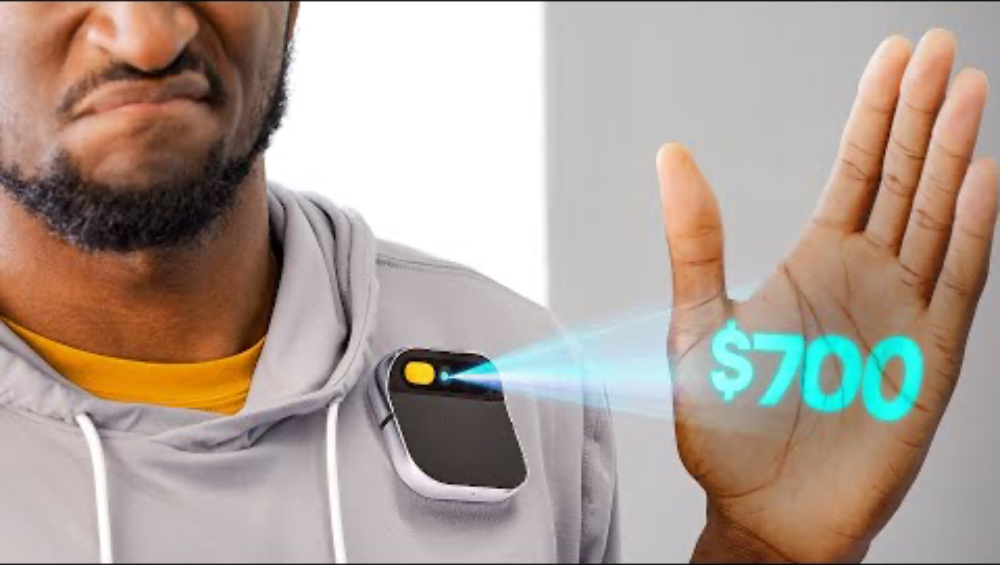
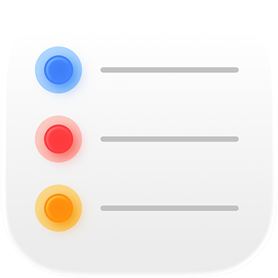
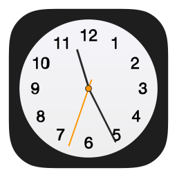
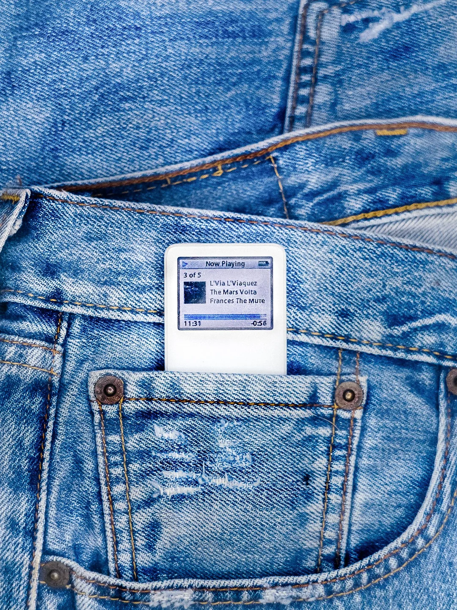
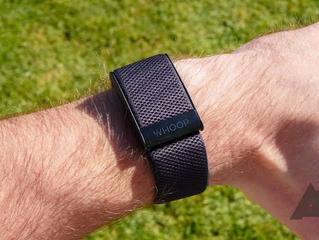
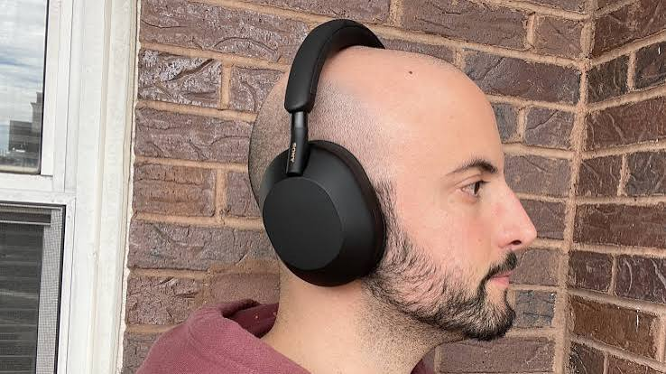
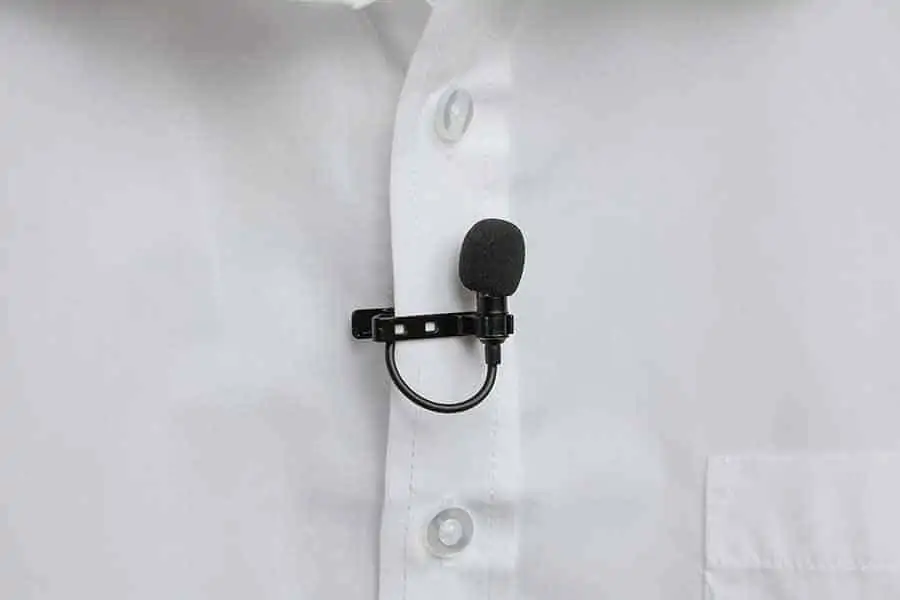
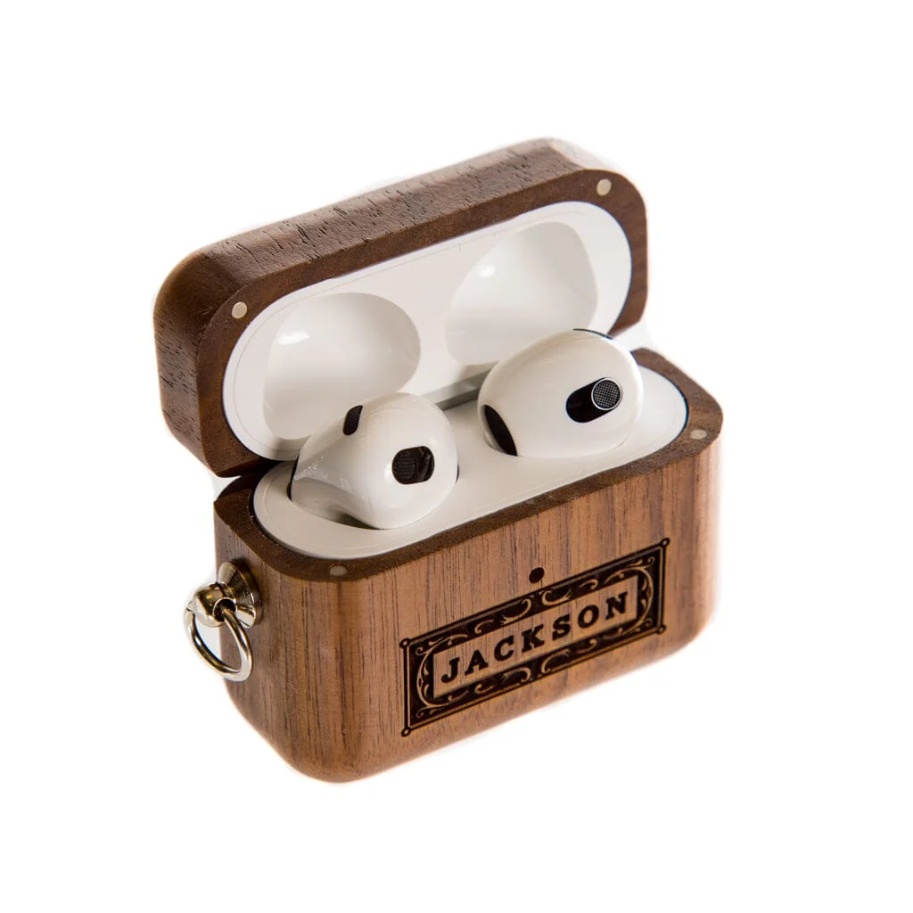
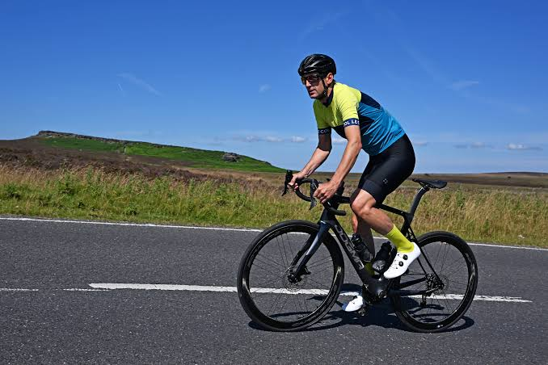

Agentic AI UW
Wearable Team Intro Meeting
10/4/2026
What device are we building?
A small, light-weight, comfortable, non-distracting, IoT gadget with a voice interface only
Direct connections to large language models and AI agents
Essentially: a new form of consumer electronics
Why build a new device?
(Below are Untested Hypotheses)
Phone is distracting with many apps and notifications
You don’t always have your phone with you (our device is meant to be worn 24/7)
Advancements in AI means many things you do on your phone can now be done by AI agents
Does not require visual attention (good for cooking, cleaning, walking, driving, working out, etc.)
Much faster and natural interaction with LLMs and agents (quick offloading of mental space)
An I/O device—no local high-performance processing chip: allows us to build this very cheaply under $100 or even $50
Some Evidence:
Screenless Wearable is on the rise

Goals and Timeline (Fall): V1
Promised to ECE Chair last Wednesday:
Before November: fully functioning prototype V1, completed PCB design and sent out to manufacturer for 2-3 units
Before December: finished assembling the 2-3 end-product units
Goals and Timeline (Winter): V2
December-January:
Continuous iteration based on user experiences
Procurement for new components
Before February:
Completed prototype V2
Completed PCB design and sent out to manufacturer for 5-8 units
(If possible machine assembly for faster iteration time)
Mid-February:
Give 5-8 units to internal club members to use for 2 weeks
Goals and Timeline (Spring): V3
March:
Continuous iteration based on user experiences
Procurement for new components
Before April:
Completed prototype V3
Completed PCB design and sent out to manufacturer for 10-15 units
Contract machine assembly for faster iteration time
Mid April:
Give 10-15 units to internal club members to use for 2 weeks
Development Process (rough outline)
Decide on use cases and specs
Select electronic components
Buy breakout boards and prototype with breadboard and jumper wires
Write the custom firmware
Design the PCB and casing
Send out to manufacturing PCB
Bring back for assembly (soldering, screwing nuts and bolts, 3D printing, or CNC)
Get user’s feedback and repeat steps 1-7 (Iterative Design)
Main Considerations
Battery Life ⬆️
Bandwidth ⬆️
Logic Compute ⬆️
RAM size ⬆️
Disk size ⬆️
Functionality* ⬆️
Comfort* ⬆️
Size ⬇️
Mass ⬇️
Latency ⬇️
Cost ⬇️
Development Time ⬇️
Usage Complexity* ⬇️
Distractions* ⬇️
*Starred items are qualities that are more difficult to quantify
Humane Pin: A Failure Case Study

Offline Status
Situations
No cellular data: in basement, remote areas, poor connection
Saving power: device has connection, not using cellular antenna to save power
Firmware
Saving user’s audio instructions in the disk
What to do when reconnected?
Functionality
Apps/Programs:
Reminders, Calendar, Timer, Clock, Fitness, Voice Notes, Music, Audiobooks, what else?
Play music (Spotify connection?), audio books, online articles transcribed to audio, emails in audio, messages in audio


Best Physical Form?





Watch/Wrist Band
Necklace
Clipped on your shirt
Pocket device
Headphone
AirPods Case
Use cases
You forgot a formula when doing assignments, so you quickly tap your gadget to start talking with an LLM and it gives you answer in 1 second
You’re biking and don’t want to bring your phone, this device gives you turn-by-turn direction while recording your workout
You’re preparing for a talk and use Stream of Consciousness and have agents prepare the presentation for you

Voice Interface
Wake-word: waste battery
Keyword detection:
Each word has its special audio wave pattern (is it the same for everyone? if not, then we might require users to record their voice for each word first, which increases usage complexity)
Without a screen, how do you instruct the users to use the device?
Pre-recorded voice to showcase features (ex: press twice to start workout)
Bluetooth pairing to headphones, display battery-life, tell time, use timers, etc.
How do users select apps?
New Idea: Typing with Turning Knob
Turning knob A-Z on both ends with markings of letters in between
Users type by turning to corresponding letters for each word or an entire sentence
Detecting typed words
Small local machine learning model (non-deterministic)
Deterministic pattern matching
Advantages:
A knob occupies very little space
You can type with just one hand and two fingers
You can type without looking at the device (once mastered)
You don’t have to talk out loud in a quiet place to interact with the device (library)
Why Typing with Turning Knob Might Work
Everybody knows the ABC song, therefore they know the location of each letter
Most people know how to spell
Battery Life: Device power should last for weeks
Need low-power chip -> reducing RAM and bandwidth
Try to use antenna as little as possible (cellular antenna is very power-hungry) -> might reduce functionality
Idle status for the gadget (very low power consumption) -> might increase latency due to startup time
Use battery with high-energy density -> might increase cost
Add more battery storage -> might increase size/mass
Add solar power -> might increase cost and development time
Latency
Processing Time on Gadget + Processing Time on Server + Network round trip
Reducing latency:
Use multimodal LLM that native audio chunks (no need for Text-to-Speech or Speech-to-Text)
Stream tokens so as soon as the first audio chunks are generated they’re sent back to the gadget (instead of send back the entire audio after response is done)
Upload audio while the user’s still recording
Chip selection
Low
Competitions
Meta Ray Band, Muse Gadget, OpenAI IO, Apple Watch, Whoop, Oura Ring
Working with Cloud Team
What data are we sending to the server? What data are they sending back?
Simple answers: direct real-time response from agents
Complex instructions: agents say “On it”, then users can check in progress any time
Working with Product/Design Team
Connections to phone (iOS apps) through Bluetooth
Can receive notifications from phone and delete unnecessary ones (need research what other features are available through Bluetooth connection to iPhone)
Controlling the phone?
Electronic Components
Will add: processing chip (some include RAM, GPS, and even bluetooth/Wi-Fi module), flash drive (disk), amp + speaker, mic, haptic driver + buzzer, LED, bluetooth chip, buttons, rotary encoders
Probably gonna add: accelerometer, camera, fingerprint sensor, NFC chip, mobile chip (for phone number)
Bluetooth
Connections to your phone to sync data with iCloud
Connections to your headphones
Accelerometer
Track your steps
Double-tap to activate AI agent (can’t press buttons because device is in your pocket or inside your coat)
What else?
Camera?
Scan qr code, ask simple questions from assignments, take pictures of fliers, posters
Bandwidth issue? (if we got photos then if we use a low-bandwidth chip it might take very long to upload photos. if we want to lower the data size then we could compress it but then it takes up RAM)
Fingerprint Sensor
Unlocking device for payment, authorization for agents to take irreversible actions?
NFC chip
Allows payments
Phone Number
Open Sourcing
We’re open sourcing our electronic components, embedded software, PCB design, mechanical design, and more
Other project ideas
E-ink note taker
USB stick for controlling devices
Tasks